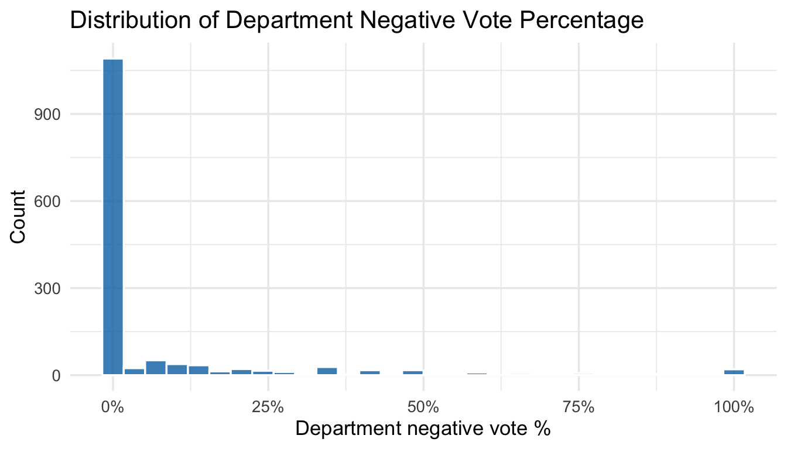
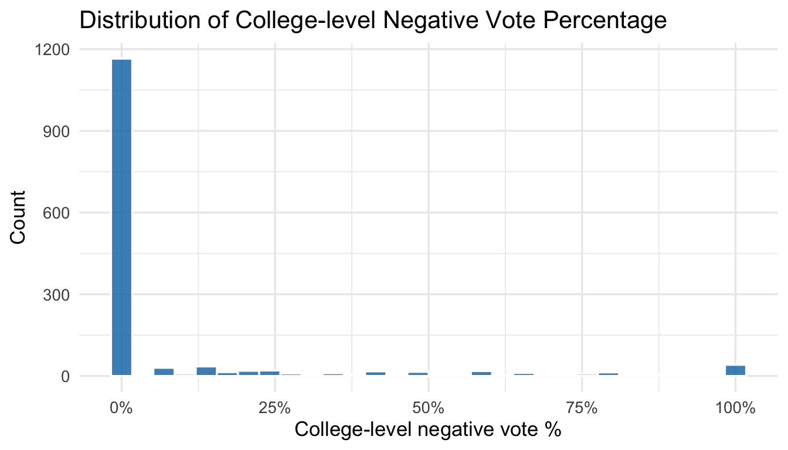
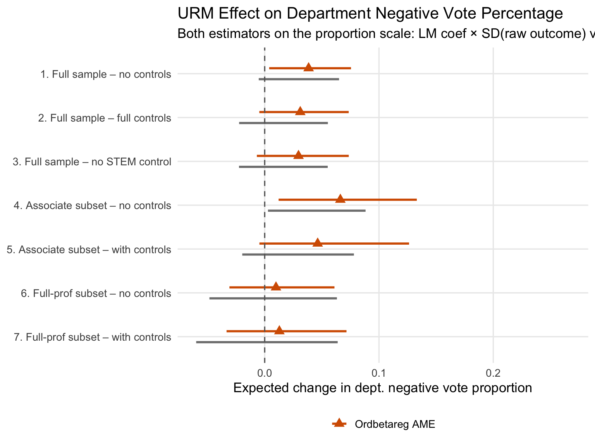

Read my latest on 5 lessons from political science to help rebuild Syria in The Conversation.
When Using OLS Hurts
Re-examining the Relationship Between Tenure Denial and Race in Masters-Waage et al. (2024)
People often use OLS for bounded continuous variables even though we know it isn’t the correct model. Ordered beta regression is a better model–but hard to predict when the results will change. For the article discussed in this blog post, OLS hid an important empirical relationship in the data.
R
Statistics
Ordered Beta Regression
Tenure
Race
Author
Robert Kubinec
Published
May 14, 2026
Ordinary least squares–also commonly called regression–is the dominant model in the social sciences. I’m sure it always will be. But there are times and places where this workhorse fails to deliver a useful answer to a research question. I developed ordered beta regression for one of these cases: bounded continuous outcomes, also called proportions. Proportions arise quite often in the social and biological sciences. There are two common sources of this kind of data:
We are measuring a continuous outcome that we want to standardize for comparability (i.e., measure it relative to a total).
We are using a measurement device like a slider that has physical bounds (such as the oft-used feeling thermometer/visual analog scale).
For this post, I will examine an empirical paper that had an outcome meeting the first condition. Masters-Waage et al. (2024) analyzed tenure decisions in a major research university, amounting to over a thousand tenure votes at the department and college level. Measuring this outcome as a proportion is natural by dividing the total votes for a given tenure candidate by the size of the voting members (i.e. the department or collegiate tenure committee). In fact, it is so natural that it might not even have occurred to you that it could be modeled differently, but it would be possible to also model the raw number of votes with the Poisson distribution.
We could also model the vote distributions with the Binomial model, though in this case that might be unwise as the Binomial model will put more weight on votes with a higher total of voting members. For tenure, though, the collegiate committee may be smaller in size than the department tenure vote, so we want to standardize that issue away by simply using the proportion who voted for a candidate.
Probably more information than you wanted to think about, but hey, I’m an academic. It’s literally my job to think too much.
Masters-Waage et al. (2024) use OLS for all of their tenure proportion outcomes. I don’t fault them for it; my R package ordbetareg did not appear until they had largely completed their research. Indeed, my aim is not “take on” anyone; rather, I want to show a concrete example where effects that were reported as non-significant by OLS in fact become more precise and meaningful with ordered beta regression.
Why Ordered Beta?
The ordered beta regression model is admittedly more complicated than OLS and requires more computational oomph. At the same time, with modern computers and software packages, the difference is fairly trivial, especially with a dataset of 1,000 cases. But OLS is a tough competitor–the model does a great job with the conditional mean of the distribution. The problem is that OLS is based on the Normal distribution, i.e. the classic bell-curve shape, which is uni-modal and symmetric. As a consequence, OLS cannot respect boundaries such as a lower limit of 0% and 100% of tenure votes. To OLS, each number is the same as another number, which is why it is considered the classic linear model. Pure linearity works well in many cases–just not all cases.
Indeed, it’s possible to use OLS and have it return a very similar estimate to ordered beta regression even though OLS isn’t made for proportions. But the difference can be significant, and importantly, it’s very unwise to choose a model based on the results you get. I.e., given issues with researcher discretion, you should always choose the best model for your research design. That way, if the results don’t go way (or they do), you can defend your results.
For the Masters-Waage et al. (2024) study, the issue arises because there are a lot of tenure votes that are unanimous. Academics tend to like people in their own department, and oftentimes people who aren’t doing well in the tenure track will withdraw before submitting their files. As a consequence, split votes are relatively rare. The histograms below show what these distributions look like for department-level and college-level tenure votes:
Show the code
ggplot(candidates, aes(x = department_negative_vote_percentage)) +geom_histogram(bins =30, fill ="#0072B2", color ="white", alpha =0.8) +scale_x_continuous(labels = scales::percent_format()) +labs(title ="Distribution of Department Negative Vote Percentage",x ="Department negative vote %",y ="Count" ) +theme_minimal(base_size =13)

Show the code
ggplot(candidates, aes(x = college_committee_negative_vote_percentage)) +geom_histogram(bins =30, fill ="#0072B2", color ="white", alpha =0.8) +scale_x_continuous(labels = scales::percent_format()) +labs(title ="Distribution of College-level Negative Vote Percentage",x ="College-level negative vote %",y ="Count" ) +theme_minimal(base_size =13)

The authors reversed the scale so that 0% means everyone voted for the candidate. As can be seen, for both departments and college-level votes, most votes are unanimous. Unfortunately, while OLS can still model the average of this distribution, the variance (error term) will be way off. An OLS model will likely predict that the department negative vote is below 0%, which of course is non-sense.
Replication
In this section, I replicate some of the main findings in the paper, comparing OLS to ordered beta regression side-by-side. The main research question in this paper is fascinating and important: are minority faculty disadvantaged in tenure decisions? The authors account for differences in faculty productivity (the h-index) and, intriguingly, the general tone of external letters.
My main goal here is not to evaluate the research design, but it is important to note that it is very difficult to infer causality with observational data when the outcome is tenure. There are lots of factors that differ across racial groups, fields, and as I noted earlier, lots of strategic behavior where people withdraw their cases if the outcome doesn’t look good. Given those caveats, though, this study has some excellent data and the authors should be commended for making it very easy to replicate their findings. That’s how science improves! 🙌
Main Findings: Are Minority Faculty Disadvantaged in Tenure Decisions?
I’ll first reproduce their unadjusted model which examines whether what they call under-represented minority (URM) status, which is a binary indicator, is associated with higher or lower negative department vote proportions for tenure (Model 1 in Table 1 in their paper) along with the ordered beta regression version. To make the ordered beta regression estimates comparable to the OLS estimates, I’ll use the avg_slopes function in the marginal_effects package to get estimates in the scale of the outcome, i.e., as a fraction of department vote:
Ordbetareg outcome: raw proportion [0, 1]; coefficients on log-odds scale.
Discipline and school fixed effects included but omitted from display.
95% frequentist CI (LM) and 95% posterior CrI (Ordbetareg) shown.
URM candidate
0.154
0.305
[-0.027, 0.336]
[0.035, 0.542]
Num.Obs.
1422
1422
R2
0.002
0.003
R2 Adj.
0.001
AIC
4037.2
BIC
4053.0
Log.Lik.
-2015.600
ELPD
-764.5
ELPD s.e.
25.5
LOOIC
1529.0
LOOIC s.e.
50.9
WAIC
1528.9
RMSE
1.00
0.19
As can be seen, the OLS (LM) model shows an association between URM status and negative tenure votes that is one-half the siza of the ordered beta regression model. OLS shows that URM candidates receive 15% more negative votes while ordered beta regression shows that URM candidates receive 31% more votes. This is an unadjusted, straightforward comparison with a binary variable, so it is a particularly stunning difference considering the simplicity of the underlying comparison. What is likely happening is that OLS is pulling the differences toward the mode at 0, while ordered beta regression is taking into account differences in the full distribution, including the small but quite important votes where all faculty voted against a candidate (!!). Again, very few if any statisticians will argue that OLS is the right model for a distribution like the one show above… so this is an easy win! 🙌
I also want to give some props to the authors again for releasing their data and code and for reporting “null” results (the OLS estimate is not significant at conventional levels). If they hadn’t done that, I might have never run the data with ordered beta and discovered this quite big discrepancy.
The authors fit quite a large number of further models with a variety of adjustments with covariates. I won’t walk through all of them but rather summarize them in a plot showing OLS vs. ordered beta regression estimates.
The code block shows the details for all the models run:
# Average marginal effects for candidate_urm_num from each ordbetareg model.# These are on the proportion scale (same units as the raw outcome), making# them directly comparable to LM coefficients back-transformed by × SD.ame1 <-avg_slopes(ord1, variables ="candidate_urm_num")ame2 <-avg_slopes(ord2, variables ="candidate_urm_num")ame3 <-avg_slopes(ord3, variables ="candidate_urm_num")ame4 <-avg_slopes(ord4, variables ="candidate_urm_num")ame5 <-avg_slopes(ord5, variables ="candidate_urm_num")ame6 <-avg_slopes(ord6, variables ="candidate_urm_num")ame7 <-avg_slopes(ord7, variables ="candidate_urm_num")
and below is the marginal effects plot:
Show the code
extract_urm <-function(lm_mod, ame_df, label, lm_sd) { lm_row <-coef(summary(lm_mod))["candidate_urm_num", ] ame_row <- ame_df[ame_df$term =="candidate_urm_num", ]tibble(analysis = label,lm_est = lm_row[["Estimate"]],lm_lo = (lm_row[["Estimate"]] -1.96* lm_row[["Std. Error"]]) * lm_sd,lm_hi = (lm_row[["Estimate"]] +1.96* lm_row[["Std. Error"]]) * lm_sd,lm_p = lm_row[["Pr(>|t|)"]],ame_est = ame_row$estimate,ame_lo = ame_row$conf.low,ame_hi = ame_row$conf.high,lm_sig = lm_row[["Pr(>|t|)"]] <0.05,ame_sig = ame_row$conf.low >0| ame_row$conf.high <0,same_sign =sign(lm_row[["Estimate"]]) ==sign(ame_row$estimate) )}results <-bind_rows(extract_urm(lm1, ame1, "1. Full sample – no controls", dnvp_sd),extract_urm(lm2, ame2, "2. Full sample – full controls", dnvp_sd),extract_urm(lm3, ame3, "3. Full sample – no STEM control", dnvp_sd),extract_urm(lm4, ame4, "4. Associate subset – no controls", dnvp_sd_assoc),extract_urm(lm5, ame5, "5. Associate subset – with controls", dnvp_sd_assoc),extract_urm(lm6, ame6, "6. Full-prof subset – no controls", dnvp_sd_full),extract_urm(lm7, ame7, "7. Full-prof subset – with controls", dnvp_sd_full))# Long format: one row per model × estimatorplot_data <-bind_rows( results |>transmute( analysis,estimator ="LM (coef × SD)",est = lm_est, lo = lm_lo, hi = lm_hi,sig = lm_sig ), results |>transmute( analysis,estimator ="Ordbetareg AME",est = ame_est, lo = ame_lo, hi = ame_hi,sig = ame_sig )) |>mutate(analysis =fct_rev(factor(analysis)),estimator =factor(estimator, levels =c("LM (coef × SD)", "Ordbetareg AME")) )ggplot(plot_data,aes(x = est, xmin = lo, xmax = hi, y = analysis,color = estimator, shape = estimator)) +geom_pointrange(position =position_dodge(width =0.5),size =0.7, linewidth =1 ) +geom_vline(xintercept =0, linetype ="dashed", color ="grey40") +scale_color_manual(values =c("LM (coef)"="#0072B2","Ordbetareg AME"="#D55E00")) +scale_shape_manual(values =c("LM (coef)"=16,"Ordbetareg AME"=17)) +labs(title ="URM Effect on Department Negative Vote Percentage",subtitle ="Both estimators on the proportion scale: LM coef × SD(raw outcome) vs. ordbetareg AME",x ="Expected change in dept. negative vote proportion",y =NULL,color =NULL, shape =NULL ) +theme_minimal(base_size =13) +theme(legend.position ="bottom",panel.grid.minor =element_blank() )

The ordered beta regression estimate of URM status isn’t always statistically significant at the 5% - 95% level (to the extent that comparison works with a Bayesian model), but the coefficient is always bigger, sometimes by a significant fraction. I take this as strong support for the authors’ findings; given the limited size of the dataset, it isn’t surprising that the models with controls are a bit less powered, and the coefficients remain large. For sure, having more power would be more helpful, but collecting this type of data is hard. I think we can safely conclude here that URM status does seem to be associated with more negative department tenure votes.
To conclude, this seems like a situation where ordered beta regression is the preferred model. However, to be a valid research practice, ordered beta regression should be preferred because it is a better model, not because it gives results in the authors’ expected direction. By making ordered beta regression the default specification, rather than OLS, scholars can get better, often more precise estimates, while also employing a model that has clear statistical foundations.
OLS can buy you a lot of things… but not happiness. Only ordered beta can do that.😎
References
Masters-Waage, Theodore, Christiane Spitzmueller, Ebenezer Edema-Sillo, et al. 2024. “Underrepresented Minority Faculty in the USA Face a Double Standard in Promotion and Tenure Decisions.”Nature Human Behaviour 8 (11): 2107–18. https://doi.org/10.1038/s41562-024-01977-7.